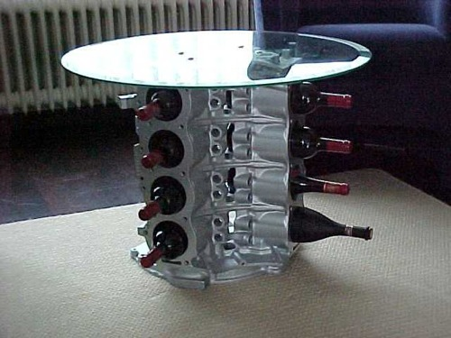

Debugging Node.js applications
Bernard Lange
@gustaff_weldon
Bernard Lange
@gustaff_weldon
node debug app.js
For hardcore MUD users
node --debug app.js
node --debug-brk app.js
not really useful on it's own
works best when combined with V8 tools
npm install node-inspector -g
node --debug-brk app.js
node-inspector
(update site): http://chromedevtools.googlecode.com/svn/update/dev/
install Google Chrome Developer Tools extension
create debug configuration Standalone V8 VM with debugger port 5858
Bernard Lange
@gustaff_weldon
Use a spacebar or arrow keys to navigate